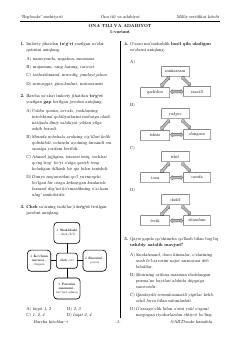

DAOna tili va adabiyot fanidan milliy sertifikat imtihonlari uchun testlar to‘plami.
Ushbu qo‘llanma ona tili va adabiyot fanidan milliy sertifikat imtihonlariga tayyorlanayotgan abituriyentlar va o‘quvchilar uchun mo‘ljallangan test topshiriqlari va namunalarni o‘z ichiga oladi. Kitobda imlo qoidalari, morfologiya, sintaksis hamda o‘zbek va jahon adabiyoti bo‘yicha savollar tahlil qilingan. Nashr bilim darajasini oshirish va imtihonlarga samarali tayyorgarlik ko‘rish uchun xizmat qiladi.